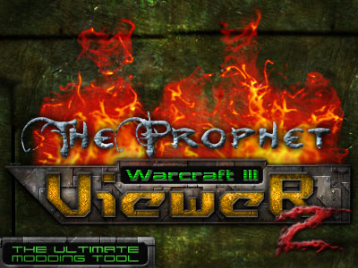

 |
"It does all things others do, and a lot
more!" - KDEWolf Welcome to Warcraft III Viewer Help file! I'm KDEWolf and I'll guide you through the help file of this awesome tool created by TheProphet. Here you will learn the basic concepts presented on this program, its features, and how to use them. I hope you get the answer for your question in this help file. Otherwise, just post it on Wc3Campaigns forums, and we'll surely help you. We will NOT answer questions related to skinning, map implementation, etc. Just check Wc3c tutorial section. "So what's this program's purpose?" This program's purpose is to extract/convert BLP files in order to make them editable through normal image editors, like Photoshop and Paint Shop Pro, as well to extract MDX models from the MPQ, and the most important, to preview these in a fast, trustworthy, complex OpenGL engine. Although the program has many other features, like screenshot taking and dynamic search, we'll discuss them later. "Hey, I already do have Image Extractor II and World Edit. Why would I need this program?" Actually you don't. But after you use it a few times and see how complex and useful its functions are, you WON'T get back to Wc3 Image Extractor II anymore, or even World Editor. This program is all the way faster, has both skinned models and skins preview, a LOT of useful features, a search engine, that works not only to BLPs as in Img Extractor, but to models as well. Yeah, it replaces WinMPQ in the hard work of searching for the model you want to extract in that huge list. Now just type what are you looking for in the edit box, see the results, double click the desired ones, and voilà! The W3V has an OpenGL rendering system, wich allows a smoother and high-quality texturing. One of the most impressive features in this program (You will surely LOVE this) is that it can extract/convert ALL the textures from the model you are viewing, and even better, it automatically saves them into the right path inside Warcraft 3 folder. The loading system works the same as on WE. When you load a model in the MPQ, it'll look for custom textures on the relative path to Warcraft III dir, and if it doesn't find, it loads directly from MPQ. And one of the BEST things for skinners: When you are editing a skin and modify it, you don't need to reload W3V (or the big and slow WE), just select other model and select back the one you were previewing. Plain, simple. It uploads automatically (but remember you still have to convert the TGA into BLP in order this to work). It also has a HD browsing engine, that makes you able to look for models and kins in your hd, and convert/preview them quickly and simple. Well, i can summarize all this in just one sentence: "It does all things others do, and a lot more!". Remember this is a tool created mainly for skinners, but works for people just wanting to extract models, convert files, preview units, etc. I assure you that you'll have a great time using this program ;) "What do I need in order to be able to run the Viewer?" This program is coded as a stand-alone version executable file. This means you just need to have the EXE file you already downloaded. But be warned that W3V uses OpenGL libraries, so it may run slower on non-3d acceleration video cards. Basically, if you can run Warcraft, you can run our program. Getting Started! If this is the first time you run W3V, it'll automatically search for your W3 installation directory. If it can't find the folder for any motives, it'll ask you to browse for it. The first impression you have is: There are two windows. One is the Warcraft III MPQ/HD treeview, that displays the models or/and skins contained within it. The other looks like a big blue window with some menu options. This is the preview screen, where you can see the model or skin selected, or even custom skins/models, since this program was made aiming modding community in 1st place. Description of the Functions: Treeview Window: Displays the models/skins contained inside the MPQ file or in your computer disks (Local Files). It has three radio buttons: one displays the MDX files WITH (although you can disable this) the skin (custom or not), the other just the pure plain BLP, and the last one displays your local files (In your disks). The tree structure is an easy and quick way to access models and skins. The bottom panel is the mesh displayer. With it you can hide/show model meshes (very useful). PS.: Meshes are something like model 'parts', wich are generally composed by different materials or blending methods. You can learn more about this with some modelling tutorials out there for download, or even the ones that come with the model editor. Main Window: The big blue (by default) panel is the place where you can preview the desired object. PS: The player color displayed in the model is a greenish/yellow tonality. The menu: Here I'll show all the menu options and their effects. But before that is important you know the camera movement controls. They're mainly controlled by mouse, but some may require to hold keys while using the mouse. Left mouse button + Mouse movement = Rotates the camera in all axis. Ctrl + Left mouse button + Mouse movement = Rotates the camera in XY axis, locking Z. Left mouse button + Right mouse button + Mouse movement = Zooms In/Out the camera (Z axis). Right mouse button + Mouse movement = Moves the camera in the XY axis, locking Z. Middle mouse button + Mouse movement = Zoom Zooms In/Out the camera (Z axis). Mouse Wheel = Zooms In/Out the camera (Z axis). More camera results can be achieved using a sequence of these commands. The options in the menu and their respective descriptions are: FILE > OPEN - Ctrl+O Opens a custom model or skin, so you can preview it or convert it. FILE > EXIT Exits the program. VIEW > LOG Shows the log window, where the loaded textures, error messages, etc. are displayed. VIEW > TREEVIEW WINDOW Shows/Hides the Treeview window. VIEW > RESET VIEW - Ctrl+R Resets the preview camera to it's initial state. VIEW > TAKE SNAPSHOT Saves the canvas into a BMP/TGA/JPG file, with custom quality tax allowed. VIEW > QUICK SNAPSHOT - Ctrl+S Saves the current canvas to a JPG file, with no options allowed, located on the program directory. VIEW > PATH TO MPQ Lets you to chose the MPQ file to be loaded. VIEW > FIND IN MPQ - Ctrl+F Search Engine: just type what are you looking for, and it'll filter the text and display all the possible results. Double clicking any of the results will cause the program to load it and preview in the main screen. VIEW > LANGUAGE W3V supports various languages. It it doesn't automatically load for you, or you do want it on another language sor any motives, just select them here. RENDER > HIDDEN GEOMETRY Shows/Hides the model's hidden geometry, like glows, special effects and such. RENDER > TEXTURED Renders the model with or without the respective texture files. RENDER > POINTS / WIREFRAME / FILL Renders the model in the following modes: only vertices, textured wireframe, and filled polygons (default). RENDER > CHANGE BACKGROUND COLOR This function allows you to select the background color of the preview screen, providing this way better contrast and more harmonical coloring. Very useful for later image editing. CURRENT FILE > EXTRACT MDX Allows you to save the current model to any directory you want to. This is a very fast and useful way to look for models and extract them later for editing. CURRENT FILE > EXTRACT (AND CONVERT) BLP Allows you to save the current skin file to any directory you want to, and in the following formats: BMP, JPG, TGA or BLP. Custom depth options and quality taxes customizable. CURRENT FILE > SHOW USED TEXTURE NAMES - Ctrl+I Displays all the textures loaded by the model in a new window (This doesn't show dynamic texturing names, like player color and glow, since they have no name, and are loaded inside the game). CURRENT FILE > EXTRACT (AND CONVERT) USED TEXTURES A great function. As you probably have guessed, it saves all the textures used by model (showed on the left panel of the new window - they can be selected or deselected), and in automatic mode, where it uses same configuration for all the textures, or manual mode, where you select these configurations individually. This keeps pathnames (you can disable this too in one of the checkboxes), so you just have to extract to your War3 root directory (default) to have then all ready for editing. any of these formats. The program can overwrite old files or not, depending upon if the Overwrite checkbox is selected or not. It can convert to the following formats: JPG, TGA, BMP, and in the folowing depths: 24 or 32 bits. CONVERT FILES > BLP -> BMP, TGA or JPG - Ctrl+C This will open a dialog where you select the input file, and other where you select the name of the output file. It converts to the following formats: BMP, TGA and JPG, with customizable depths and quality rate. CONVERT FILES > BMP, TGA or JPG - > BLP - Ctrl+V Inverse of the above function, so works the same way. Loads the BMP, TGA or JPG and converts it to BLP. HELP > HELP - F1 Displays this help file. HELP > ABOUT Displays the About box, with credits, copyright information, links to sites and email adresses, an image by me (KDEWolf) and maybe some hidden things ;) Well guys, the help file end here. I hope your question was answered. If it was not, just post it on Wc3Campaigns forums, and we'll surely help you. Feel free and encouraged to report bugs, errors, suggestions, or whatever. I expect this was useful for you. And remember we are going to update this program with more features and useful functions. Be sure to check it often! |
Copyright 2003 - TheProphet - All rights reserved |